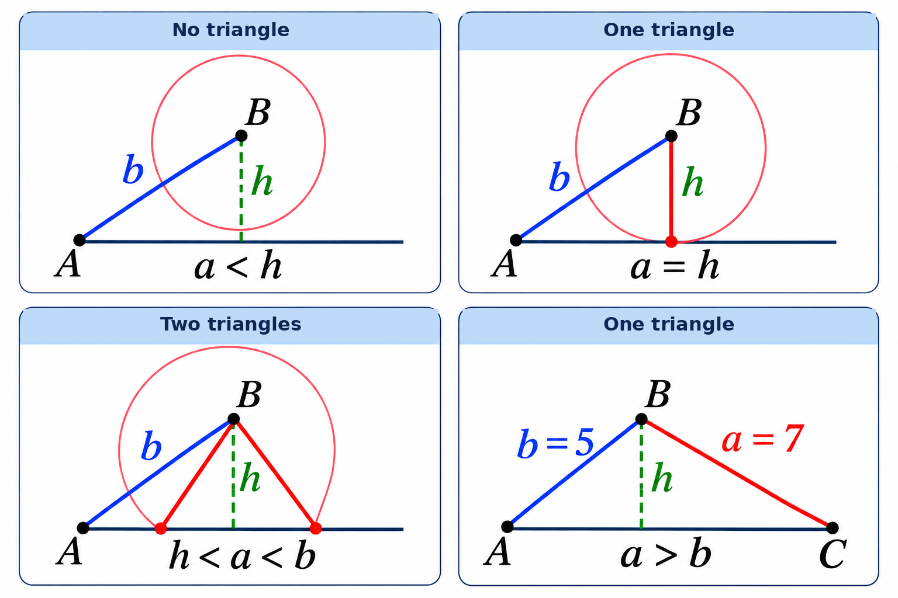
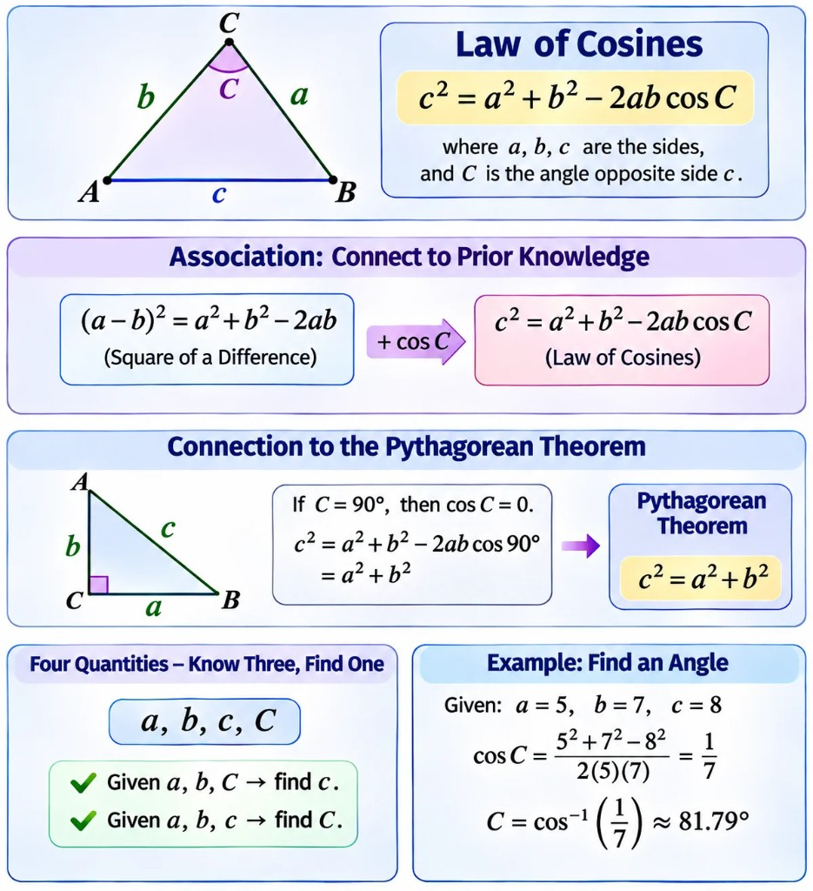
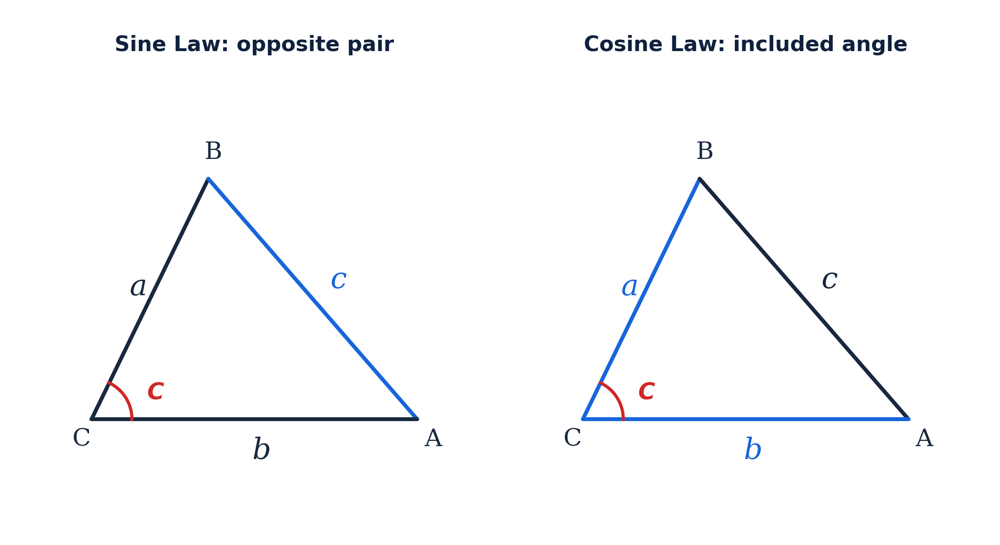

Oblique Triangles and Triangle Laws
Oblique Triangles and the Sine Law
Types of Oblique Triangles
An oblique triangle is any triangle that is not a right triangle. An acute triangle has all three angles smaller than 90°. An obtuse triangle has one angle greater than 90°.
The Sine Law
For triangle ABC, side a is opposite angle A, side b opposite B, and side c opposite C. The Sine Law relates each side to the sine of its opposite angle.
Use the Sine Law when a known angle–opposite-side pair is available, for example ASA, AAS, or SSA. For SAS or SSS, the Law of Cosines is generally the starting point.
The SSA Ambiguous Case
When two side lengths and a non-included angle are given (SSA), two distinct oblique triangles may satisfy the same data. This is called the ambiguous case. See the sections below for the height test and diagram.
Using the Sine Law in Applications
Sketch the situation, label each angle and its opposite side, check that the calculator is in degree mode, choose the matching side–angle ratio, solve, and check whether a second angle is possible.
For an angle found from sin B = k, the second candidate is 180° − B. Keep it only if the triangle's angles still sum to less than 180° before finding the final angle.
SSA Ambiguous Case (Sine Law)
Why Two Different Triangles May Be Possible

When two sides and a non-included angle are given (SSA), the same measurements can sometimes produce two distinct triangles. This is called the ambiguous case of the Law of Sines.
Let A be the known acute angle, a the side opposite A, and b the other known side. The perpendicular height from the end of side b to the base ray is:
Construct the figure with a compass: draw side b from vertex A, then draw a circle centered at its other endpoint B with radius a. Each intersection of the circle with the forward base ray gives a possible third vertex C.
The Four Possible Outcomes
- a < h — no triangle. Side a is too short to reach the base ray.
- a = h — exactly one right triangle. The circle touches the base ray at one point.
- h < a < b — two distinct triangles. The circle crosses the forward base ray twice.
- a ≥ b — exactly one triangle. The other circle intersection is at A (when a = b) or behind A (when a > b), so it does not make a second non-degenerate triangle.
Therefore, for an acute given angle A, two distinct triangles are possible when:
Worked Example
A = 30°, b = 10, a = 8. First check: h = 10 sin 30° = 5, and 5 < 8 < 10, so two triangles are possible.
The Cosine Law
Understanding and Remembering the Formula
Use association, logical checks, and links to the Pythagorean theorem so the formula makes sense — not just for memorization on a test.

What Is the Law of Cosines?
The Law of Cosines helps solve general triangle problems, including:
- Given two sides and the included angle, find the third side.
- Given three sides, find one of the angles.
The Law of Cosines solves general triangles, not only right triangles. Use two sides and the included angle to find the third side, or use three sides to find an angle.
Let the sides be a, b, and c, with angle C opposite side c (the same letter labels the angle and its opposite side).
Four Quantities — Know Three, Find One
Before memorizing, notice four quantities in the law:
Three are side lengths and one is an angle. In standard uses, knowing three suitable values lets you find the fourth.
Case 1: Find a Side
Given a, b, and C, find c by substituting directly into the law.
Case 2: Find an Angle
Given a, b, and c, rearrange:
Remember Through Association
Many students forget the −2ab cos C term or swap it for −2ac cos C or −2bc cos C.
Link the law to the square-of-a-difference identity:
The right side a² + b² − 2ab matches the law except the last factor gains cos C: c² = a² + b² − 2ab cos C.
Start with the square of a difference, then add the cosine factor to the last term. That is association: connect a new formula to knowledge you already trust.
Why 2ab, Not 2ac or 2bc?
Suppose a, b, and C are known and you need side c. If you wrongly write c² = a² + b² − 2ac cos C, the right side still contains c, so you cannot substitute numbers directly.
The correct form uses the other two sides: 2ab cos C, with only a, b, and C on the right.
Connect to the Pythagorean Theorem
For a right triangle with hypotenuse c, the Pythagorean theorem is familiar. The law of cosines is
If C = 90°, then cos 90° = 0:
The Pythagorean theorem is the law of cosines when C = 90°. The law applies to all triangles, including right triangles—it generalizes what you already know.
Example — Find an Angle
A triangle has a = 5, b = 7, and c = 8. Find angle C.
Step 1: Start from c² = a² + b² − 2ab cos C.
Step 2: Solve for cos C.
Step 3: Substitute.
Step 4: Use the inverse cosine (set the calculator to degree mode).
A Better Way to Learn Mathematics
Learning the law of cosines is a chance to practice three habits:
- Association: Link to (a − b)² = a² + b² − 2ab.
- Logical reasoning: When finding c, check that the right side uses only a, b, and C.
- Prior knowledge: Set C = 90° to recover the Pythagorean theorem.
Understand, Connect, Remember
When you meet a new formula, ask:
- What familiar formula does it resemble?
- Can logic tell me if I wrote it correctly?
- In a special case, does it become something I already know?
- What information do I need before I can solve the problem?
Don't just memorize a formula. Understand it, connect it, and learn how to reconstruct it.
That habit helps far beyond the law of cosines.
Applications in 3D Settings
Working with Three Dimensions
Use the SOH–CAH–TOA ratios, the Sine Law, and the Law of Cosines in three-dimensional situations. Identify the horizontal plane, vertical height, and slanted segment before solving.
Draw a 3D sketch, then isolate a right triangle or an oblique triangle in a plane. Solve one triangle at a time and use its result in the next triangle.
Typical applications include the height of a regular tetrahedron, the length of a diagonal through a rectangular solid, and a distance involving height and horizontal separation.
Choosing Between the Sine Law and the Cosine Law
Once you know both laws, identify the information given in the triangle before choosing a formula.
Reading the Abbreviations
S = side (a known side length); A = angle (a known angle). The letters describe the order of the given parts around the triangle: ASA = angle–side–angle; AAS = angle–angle–side; SSA = side–side–angle; SAS = side–angle–side; SSS = side–side–side. In SAS, the angle lies between the two known sides; in SSA, the known angle is not between the two known sides.
Sine Law: Look for a known angle and its opposite side (a complete opposite pair). This is usually the fastest starting point for ASA, AAS, or SSA. For SSA, check the ambiguous case: there may be zero, one, or two triangles.
Cosine Law: Use it when you know two sides and their included angle (SAS), or all three sides (SSS). An included angle is the angle between the two known sides.

The red arc at A meets both sides of angle A. Blue marks the information used to recognize each law.
- Given ASA or AAS → find the third angle using 180°, then use the Sine Law.
- Given SSA → start with the Sine Law; check for the ambiguous case.
- Given SAS → start with the Cosine Law to find the opposite side.
- Given SSS → start with the Cosine Law to find an angle.
To finish solving a triangle, you may switch between the two laws. Check that the larger side is opposite the larger angle.